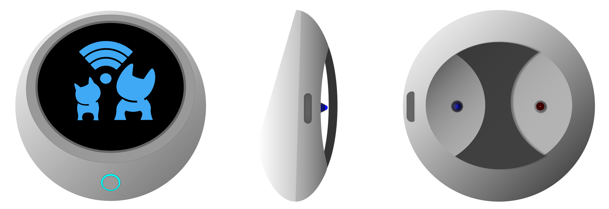

Products | SmartPet-20 Safety Collar
Honestly, it's kind've hard to sell a product that's been so heavily reduced it's merely a clone of other devices flooding the market right now, but I'll have a crack: at least I made it look better than the others which is just as well given the fact that apart from Joanne creating a logo the other day, I'm the only one who's demonstrated any kind of creativity or original thinking in the entire two months we've been on this product - everyone else just re-worded shit they read online and called it job-done.

Imagine no longer having to guess how your pets are feeling or how their general health/well-being is affecting them on any given day only to have them respond with that blank stare and wagging tail or purring that gives nothing away but how happy they are to see you.
It's long been known that animals are naturally adept at hiding illness with a natural fear of being cast out of their social group or pack and we will rarely see a pet behave in a way that betrays any negative impact on their health until that animal is so critically ill it can no longer act and by this point it's usually too late to do anything about it.
The SmartPet-20 is an innovation in animal care, bringing animals and humans closer than ever before while closing the communication gap using technology that gives owners knowledge and detailed information about their animals through a combination of hardware sensors that tell you how your creature is feeling with detailed statistical analysis of health stats and activity levels.
If would've done a whole lot more than that, but everyone pussied out of being innovative and retreated to reading endless, bland articles about other peoples inventions then huddled together to regurgitate all those other peoples ideas back up into a document that's like a 15,000 word sleeping pill - all while leaving me to imagine, create and prototype the device myself.
The most up to date sensors many of us wear on our wrists every day to monitor pulse, step-count and stress levels were just the starting-point in creating our device: we have taken the standard hardware included in most market-leading smart-watches today, ramped them into a beastly design then built on that with the inclusion of the following features:
Of course there's an app for mobile devices available from both the apple and android stores as well as a more fully-featured suite of tools for Windows, Mac and we have not forgotten about you linux users either.
The SmartPet-20 is not only designed for pets or dog and cats by any means, with not only different collars, harnesses and straps to fit most animals but a system of software modules that are easily downloaded directly to the device via wifi and read-in by the AI core: want units to fit your horses? just select the horse collar and the matching module; the AI will instantly recognise the range of health attributes, dimensions and body-language patterns horses present.
All our modules are Open-Source and with a development community constantly growing, anybody can create and modify their own custom plugins and species modules or contribute to our official releases by applying for contribution access to any of our public github repositories here.
Hardware:
Onboard Peripherals:
Software: